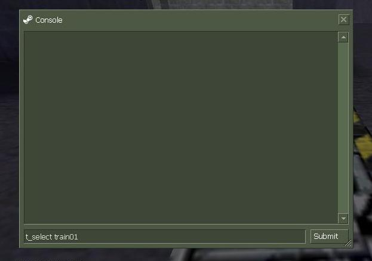
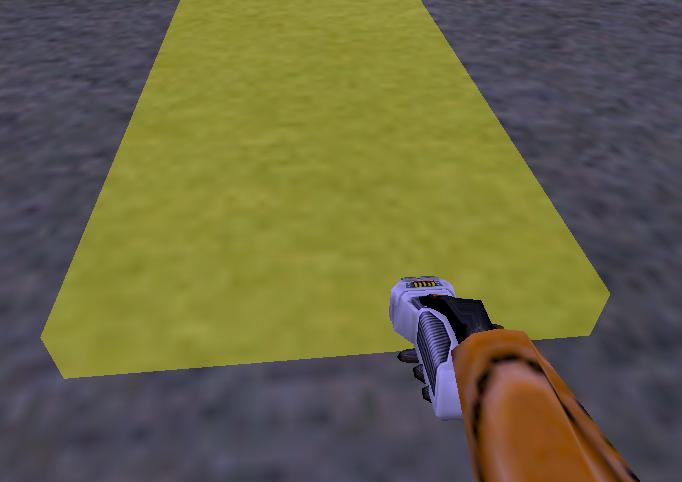
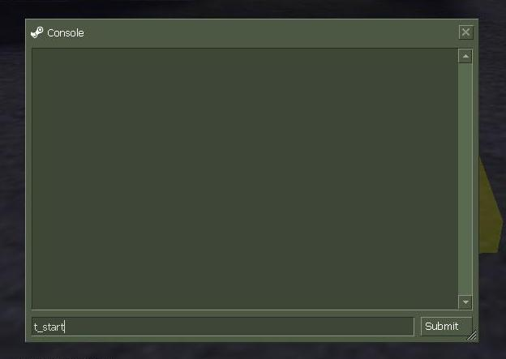
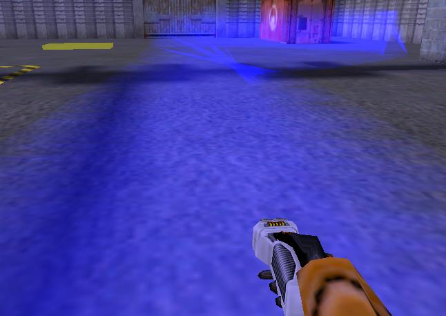
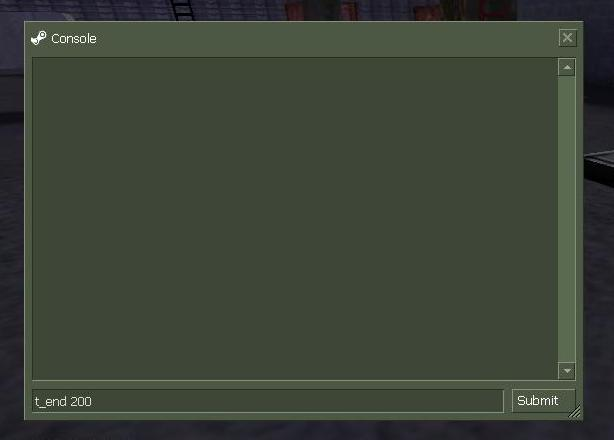
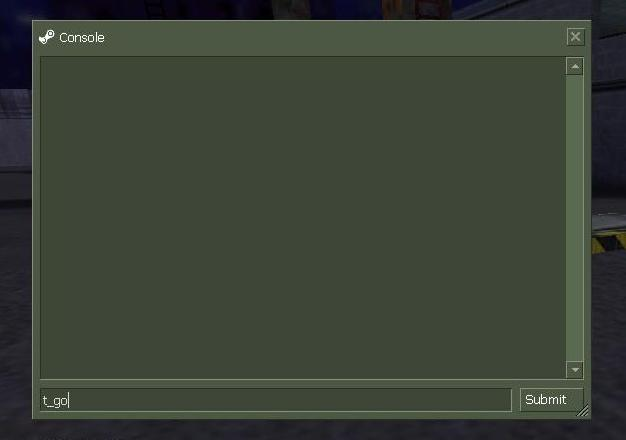
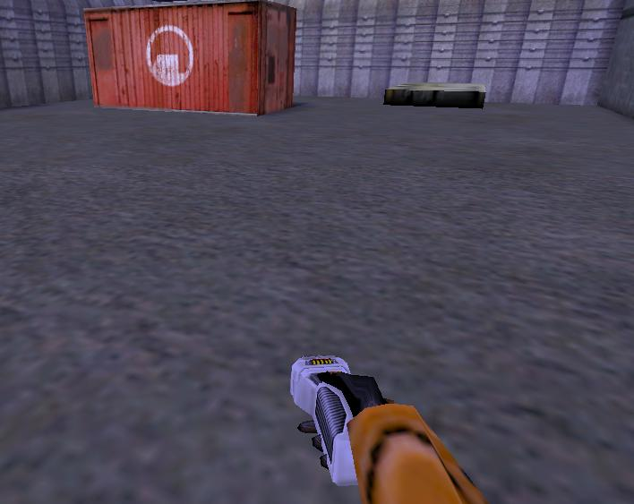

|
This section will explain how to make trains in Ent Mod:
Command Use:
First, you will need to enter the command in the console:

In the picture above you can see that the t_select command was entered. The train01 part of the command can be anything as long as it contains no spaces. For this example train01 was used. Remember, that each train you create needs to have a different name!
Next, you can see the effect of this command once enter is pressed:

In the picture above you can see the entity turns yellow letting you know that it has been selected to become a train.
Next, you will need to enter the t_start command to set the trains path that it will follow:

In the above picture you can see the t_start command was entered.
Next, you can see the effect of this command after enter is pressed:

In the picture above, once you have the t_start command entered, you will be in train
editing mode and anywhere you go or walk you will be making a train path
that your selected train will follow. You will know that you are in
this mode by the blue trail that shows where you have been and by the following
message in chat:
Next, you will need to enter the t_end command:

As you can see in the picture above the t_end command was entered. The 200 part of this command is the speed you want the train to move at. You can enter any number you would like here but remember that a number excessively high may cause the server to crash on some mods.
Next, you will need to enter the t_go command:

As you can see in the picture above the t_go command was entered. Once this command is entered the train will start moving on the path you made for it.
Here, you can see the effect of this command:

The train is now moving along its set path and will continue to do so. If you wish to stop it, you run the e_use command on it. You can restart it the same way.
This example was done with the Opposing Force mod but this example holds true for all Half-Life mods. |